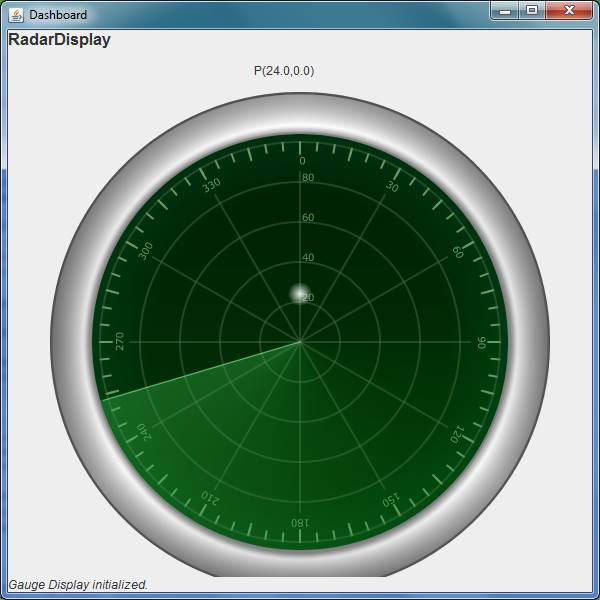

Requirements
Our company intends to develop a new hardware/software product to be used in experimental low-cost robotic applications.
The product (named
SonarStepperRadar) is composed of the following hardware devices (see the image below)

The software running on the RaspberryPi must
- Activate the sonar
- Move the stepper motor
- Send to a remote computer data (obstacle-position) of the form p(sonarData,angleData)
at a rate of 10 data for second
The software running on the PC must
- Acquire the data sent form the RaspberryPi
- Show the current obstacle-position on a diplay like that shown in the following image

| Address (natSpot) |
Boards |
Devices |
Sensors |
Battery |
Notes |
| 192.168.43.95 |
RasperryPi |
1 wireless 1L298N 1 servo SS099 1 sonar |
1 distance sonar |
- |
- |